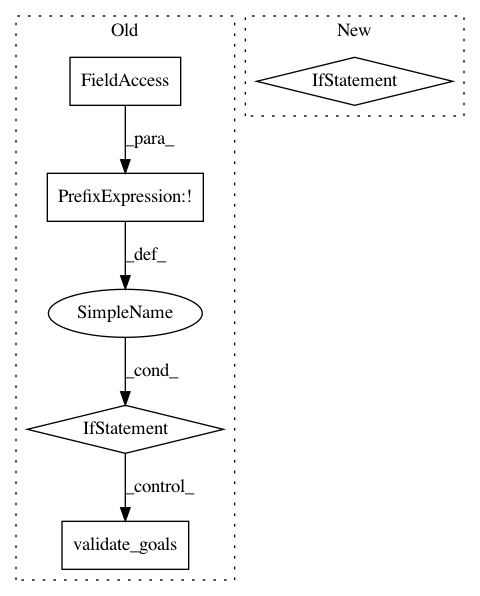

d064804b3acf89a30fefae3f6900f0414e3e3416,src/python/pants/bin/local_pants_runner.py,LocalPantsRunner,_maybe_run_v2,#LocalPantsRunner#,255
Before Change
// If we"re a pure --v2 run, validate goals - otherwise some goals specified
// may be provided by the --v1 task paths.
if not self._global_options.v1:
self._graph_session.validate_goals(self._options.goals_and_possible_v2_goals)
try:
self._graph_session.run_console_rules(
self._options_bootstrapper,
self._options.goals_and_possible_v2_goals,
After Change
_, ambiguous_goals, v2_goals = self._options.goals_by_version
goals = v2_goals + (ambiguous_goals if self._global_options.v2 else tuple())
if not goals:
return PANTS_SUCCEEDED_EXIT_CODE
return self._graph_session.run_console_rules(
self._options_bootstrapper,
goals,
self._target_roots,
In pattern: SUPERPATTERN
Frequency: 3
Non-data size: 5
Instances
Project Name: pantsbuild/pants
Commit Name: d064804b3acf89a30fefae3f6900f0414e3e3416
Time: 2019-04-20
Author: stuhood@twitter.com
File Name: src/python/pants/bin/local_pants_runner.py
Class Name: LocalPantsRunner
Method Name: _maybe_run_v2
Project Name: pantsbuild/pants
Commit Name: 008ce42cb55e529319f53abeb00fc6cf3918f548
Time: 2018-08-06
Author: stuhood@twitter.com
File Name: src/python/pants/pantsd/service/scheduler_service.py
Class Name: SchedulerService
Method Name: prefork
Project Name: pantsbuild/pants
Commit Name: d064804b3acf89a30fefae3f6900f0414e3e3416
Time: 2019-04-20
Author: stuhood@twitter.com
File Name: src/python/pants/pantsd/service/scheduler_service.py
Class Name: SchedulerService
Method Name: _prefork_body